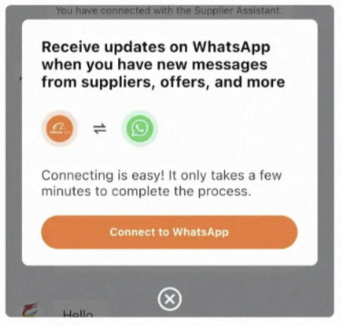


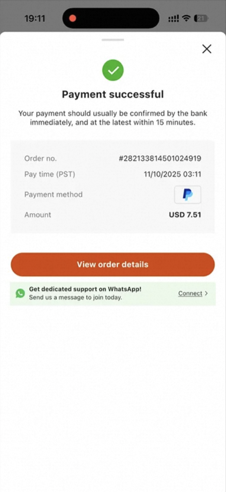
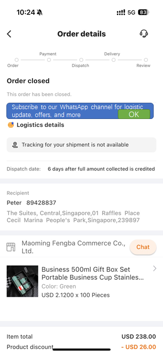


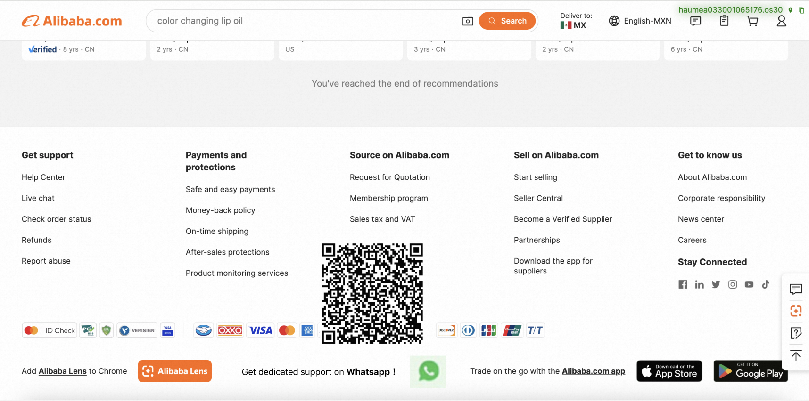

| 项 | 内容 |
|---|---|
| 文档状态 | v0.2 草案（供评审；融入国际站语雀实读 + Redash 实测，相对 v0.1 重写） |
| 日期 | 2026-08-19 |
| 作者 | Jolyne Zhang（Lifecycle / 买家侧） |
| 关联 Jira | UC-419（[Lifecycle] WhatsApp: Marketing Messages）；Epic：UC-180（Subscription Entry） |
| 上游文档 | [BRD_WhatsApp买家发送策略一期 v1.2](BRD_WhatsApp买家发送策略一期.md)（2026-08-17）；[订阅漏斗取数测算报告 v3](WhatsApp_订阅漏斗取数测算报告.md)（2026-08-19） |
| 对标基线 | Alibaba 国际站语雀订阅方案（2026-08-19 浏览器实读 6 篇：入口整理/手机号订阅 PRD/竞品调研/WhatsApp 手册/订单页 BRD/订阅增长策略 BRD） |
| 格式参考 | Nexus WhatsApp Integration PRD（Confluence）；Alibaba 国际站订阅欢迎流（语雀） |
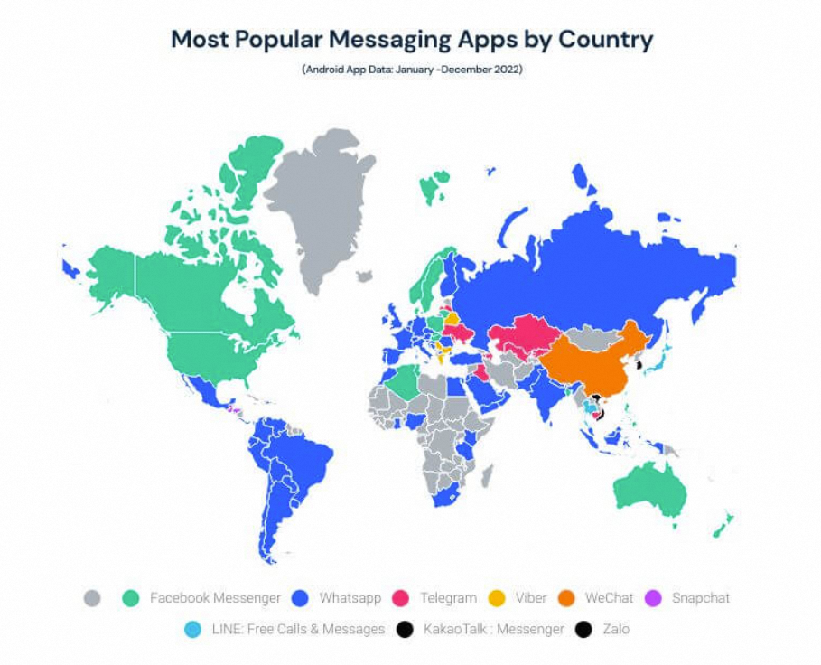
图：全球消息应用覆盖率地图（来源：订阅增长策略 BRD 调研）——欧洲大陆（含 DE/FR/IT/ES）以 WhatsApp 为主流，支撑渠道选择。
| 目标项 | 数值 |
|---|---|
| 订阅池圈人漏斗 | 营销消息发往订阅池（audience funnel），圈人频次灰度期 4% 池/日起步 → 稳定期每周 1 轮（14% 池/日） |
| 日均触达 UV | ≥ 160/日（达标线；BRD 稳态口径 176/日 ≥ 160 ✓） |
| 对北极星贡献 | 日均 AB2 ≥ 5（北极星 AB2 ≥ 8/日 = 系统消息 ≥ 3 + 营销 ≥ 5） |
| 财年底累计订阅（2027-03-31） | ≥ 35,000（达标线 ~32,000 的 110% 缓冲，日均新增 ≈ 165） |
| 护栏 | 送达率 ≥ 90%、退订率 < 5%、投诉/拉黑率 < 2% |
测算支撑（v3 报告，212 天三段式）：
| 场景 | 212 天累计 | vs 35,000 | 达成路径 |
|---|---|---|---|
| 保守 | ≈ 15,000–16,000 | ✗ 缺口 54–57% | 存量激活 5–10k 仍不够 |
| 基准 | ≈ 26,000–27,000 | ⚠ 缺口 23–26% | + 存量激活（活跃池 0.5–1%/月 ≈ 5–10k）→ 31–37k 可达标 |
| 乐观 | ≈ 39,000–40,000 | ✓ 超额 11–14% | 点位 1 一级同意率 20% 达成 |
结论：35,000 可达，但"站内新触点 + Subscription Center 存量激活"缺一不可；灰度期（9 月 DE 单点位）验证转化率基线（一级同意 ≥15%、二级确认 ≥60%）是 10 月全量放量的前提。
本 PRD 覆盖订阅收集链路（UC-419 的前置与输入）：订阅点位设计、double opt-in 流程、订阅态三态服务、订阅后 onboarding、同意记录与埋点、护栏与合规、衡量指标。
Out（不在本 PRD）：营销消息发送策略本身（圈人池、频次 A/B）→ 由 UC-419 主体方案承接；系统消息（conversation 提醒 / 催复提醒）→ PRD_Reminder；商家侧通知 → 述合。
| # | 点位 | 位置 | 优先级 | 一级同意机制 | 二级确认机制 | 对标锚点（国际站实测） | 预期贡献占比 |
|---|---|---|---|---|---|---|---|
| 1 | 询盘发出后弹窗 | 询盘/RFQ 提交成功页 | P0（9 月灰度） | 场景绑定授权弹窗（最强合规） | WhatsApp 确认消息/链接 | 沟通页弹窗8.6%（日均 ab3 152k→授权 13k） | 高（~58%，高意图） |
| 2 | 手机号验证后二次询问 | 手机号验证成功回调 | P0 | 验证成功后弹窗询问 | WhatsApp 确认消息/链接 | 无直接对标（介于注册 10% 与订后 2% 之间），灰度期实测校准 | 高（~25%，号码已验证二级确认送达率高） |
| 3 | 注册页独立勾选框 | 注册流程末步 | P0 | 默认不勾选，主动勾选 | WhatsApp 确认消息/链接 | 注册联动 10%（国际站为默认勾选/直接授权 → Visable 从严折半） | 中（~17%） |
| 4 | Subscription Center | 账号设置 → 通知偏好（复用 UPR-55 Lifecycle 入口） | P1（10 月） | 用户自助开启/关闭 + 偏好设置 | 变更即时生效（登录态操作即主动授权） | 个人中心 MA 模块 1%（40w UV→4k）；存量激活是本方案达标关键路径 | 中（存量用户入口，补缺口 5–10k） |
| 5 | 站外入口（IG/FB/落地页） | 社媒主页链接、独立落地页 | P2（爬坡后） | 表单勾选或回复关键词 | 短信/邮件确认码，回复确认后订阅 | 国际站站外 IG/FB 入口；绑定码流程（wa.me+BIND-xxx）为范本 | 低（一期不做） |
灰度节奏：9 月 DE 单国 1 场景（点位 1 询盘弹窗）跑通 → 10 月全点位放量 → 11–12 月按转化率数据调优点位权重。各点位一级同意转化率与 double opt-in 完成率假设见 §9.1。
国际站已上线的 8 大订阅入口实拍如下——Visable 五点位与其一一对应，是 UI 形态与文案的参考基准：
| 入口（国际站） | 演示图 | 对应 Visable 点位 | 要点 |
|---|---|---|---|
| 沟通页弹窗 | | 点位 1 询盘弹窗 | 沟通后弹窗，8.6% 转化锚点；橙色 CTA + 关闭按钮在弹窗下方 |
| 沟通页弹窗 v2 |  | 点位 1 | 同场景不同文案/按钮（Allow WhatsApp notification） |
| 沟通列表页横条 | | 点位 1 回退 | 列表底部横幅，20w UV × 10–15% 订阅率 |
| 个人中心 MA | | 点位 4 SC 对标 | 登录态页面横幅，1% 转化锚点（40w UV→4k） |
| 订单详情页 | | 点位 4 对标 | 订单场景横幅，2% 转化锚点（10w UV→2k） |
| 支付成功页 |  | 点位 4 对标 | 下单后即时场景 |
| 订单关闭页 |  | 点位 4 对标 | 明确的订阅 CTA（OK 按钮），订单页 BRD 组件 |
| WAP 订阅条 | | 点位 1 形态参考 | 订阅文案范本（入口整理引用同一文案） |
| 首页 PC 横幅 | | P2（不做） | 首页大曝光 0.2% 转化，效率极低 |
| PC 页脚链接 |  | P2（不做） | 页脚低频链接 |
| 搜索重复 query | | P2（二期） | 搜索意图订阅新玩法，+6k/天 |
开启后，我们将通过 WhatsApp 向您发送：① 询盘回复提醒（供应商回复第一时间通知）② 与您采购需求相关的产品推荐（每周最多 1 条）③ 重要通知。您可随时在账号设置或回复 STOP 退订。详见[隐私声明]。
口径说明：上述 592 buyer/日含 Nexus（request_origin='alibaba'）——Nexus 询盘发生在 Alibaba.com 场域，Visable 无法在那做订阅弹窗，应予排除。按 Visable 看板标准口径（request_origin IN ('app','web')），Nexus 约占 AB 层询盘买家的 ~25%，修正后 Visable 站内可用曝光基数约 810–840 req/日、440–450 buyer/日（待 Redash 精确取数后校准）。修正后的曝光基数仍高于反推所需的单点点位需求（~730/日），但缓冲空间大幅收窄。
| 演示图 | 说明 |
|---|---|
| 基础版：授权文案 + 橙色 CTA（Connect to WhatsApp），关闭按钮在弹窗下方 |
| 变体 A：Allow WhatsApp notification 按钮措辞 | |
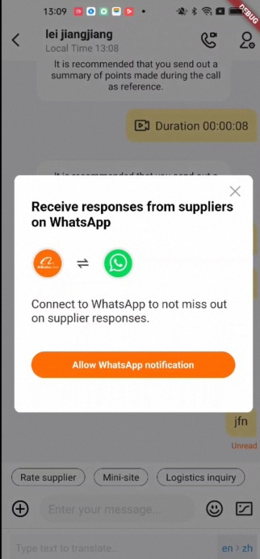 | 变体 B：背景为真实聊天会话、弹窗叠于会话之上（本设计建议形态） |
| 演示图 | 说明 |
|---|---|
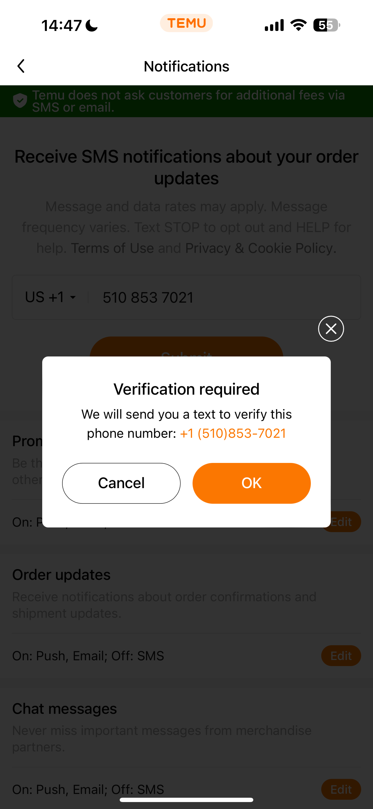 | TEMU 注册中电话验证后直接进入订阅确认——与本点位「验证成功回调后询问」同构 |
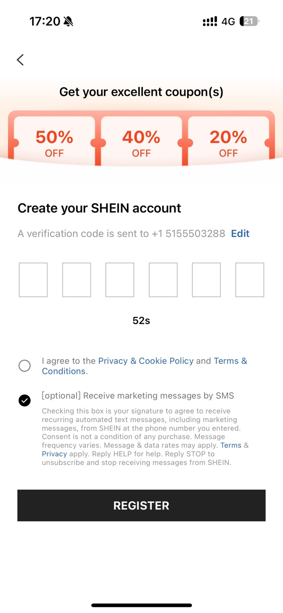 | SHEIN 手机号注册时在验证页同步征求 SMS 授权——验证场景承载授权入口的竞品实证 |
☐ 通过 WhatsApp 接收询盘回复提醒与产品推荐（每周最多 1 条，可随时退订）
| 演示图 | 说明 |
|---|---|
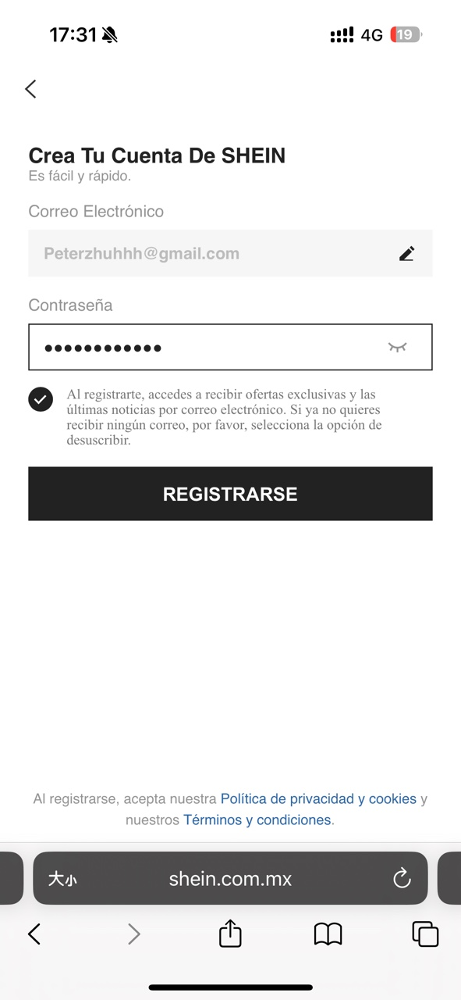 | SHEIN 注册流程中补充手机号/短信订阅的步骤页——注册链路内嵌订阅入口 |
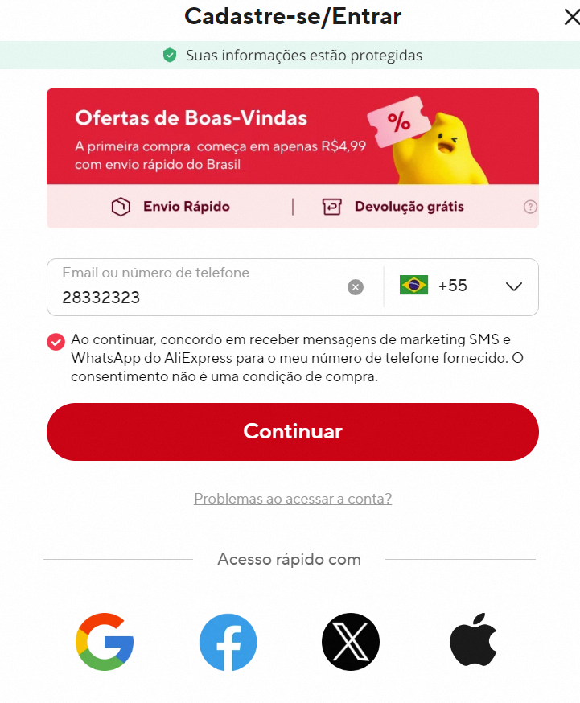 | AE 注册页默认勾选营销授权（巴西语）——Visable 合规从严，不采用默认勾选，仅作对照 |
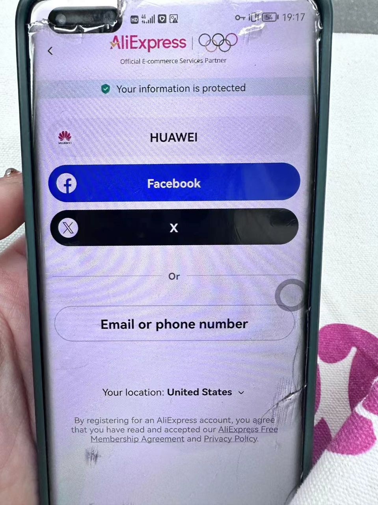 | AE 注册页整体形态（本点位勾选框所在页面的竞品参照） |
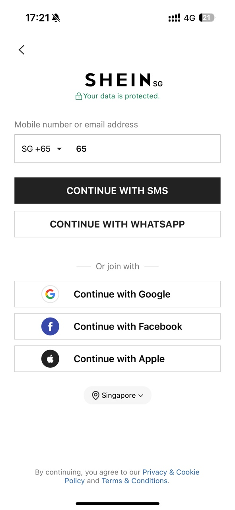 | SHEIN 以 WhatsApp 作为注册登录方式——Visable 一期不做「WhatsApp 登录」形态，仅作参考 |
1. 查看当前 WhatsApp 订阅状态（未订阅/待确认/已订阅/已退订）；
2. 开启：未订阅用户点击开启 → 进入 double opt-in 流程（发确认消息）；
3. 关闭（退订）：即时生效并同步订阅态服务，无需二次确认（退订零摩擦）；
4. 偏好设置：品类（按采购品类圈选）+ 频次（每周 1 次 / 仅重要消息）；「仅重要消息」自动降频，与频控统一；
5. 手机号变更：更新手机号后订阅状态置「未知」，需重新验证并确认（号码即触点标识，换号必须重授权）。
| 演示图 | 说明 |
|---|---|
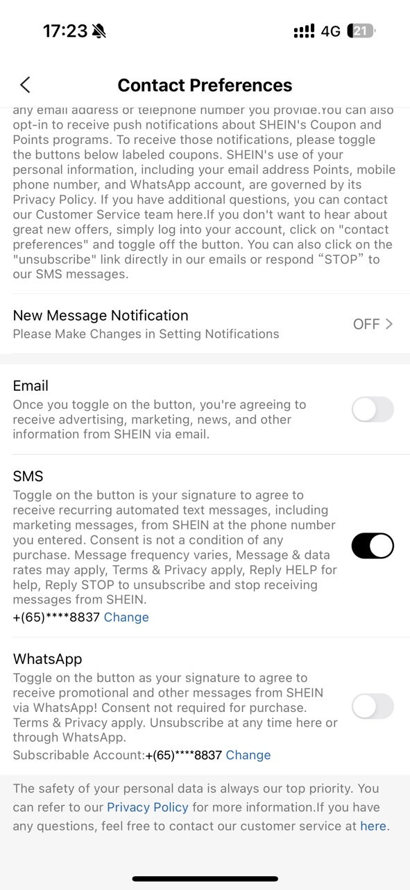 | SHEIN 通知偏好页：WhatsApp/SMS/Email 分渠道开关——本点位渠道开关形态参考 |
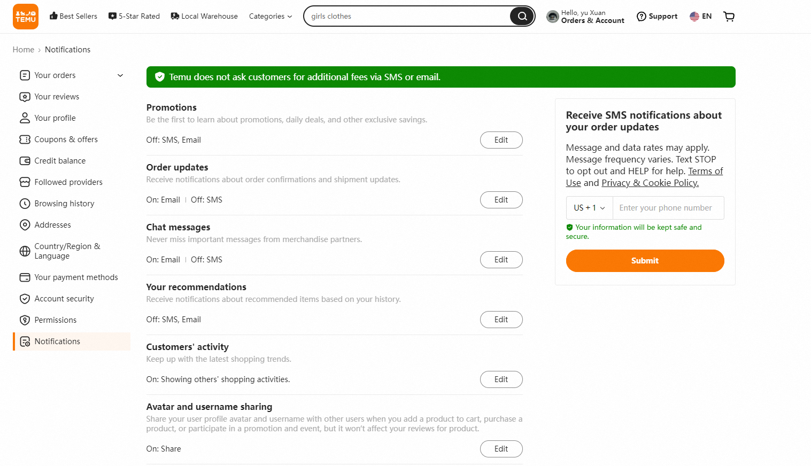 | TEMU 通知设置：按消息类别（Promotions / Order updates）细分 + Edit——对应本点位「品类 + 频次」偏好设置 |
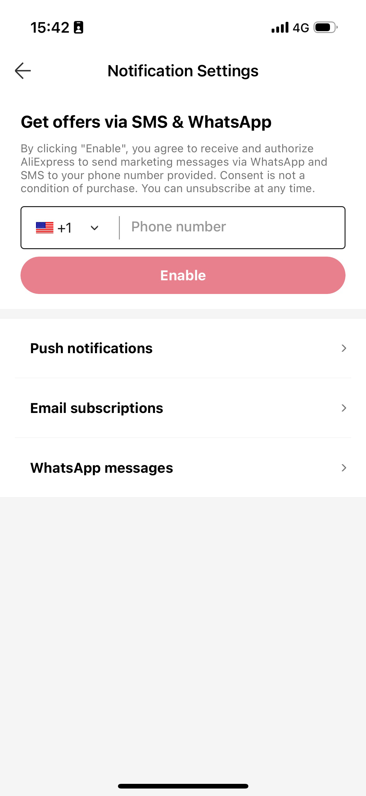 | AE 通知设置 PC：营销渠道（SMS & WhatsApp）独立 Enable 开关 |
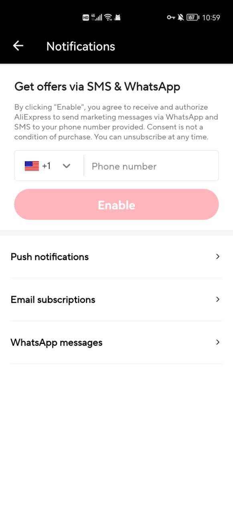 | AE 通知设置 App 版（移动端形态） |
| 国际站规律 | 对本设计的落地 |
|---|---|
| 意图越高转化越高（沟通 8.6% ≈ 注册 10% >> 订后 2% >> 首页 0.2–0.4%） | 点位 1（高意图）为主力，点位 2/3 为补充；不做首页大曝光入口（100w UV 级仅 0.2–0.4%，效率极低，P2 正确） |
| 入口要全站铺设（国际站 8 入口） | 一期 4 站内入口并行，登录页入口国际站有但 Visable 排 P2（登录页改造成本高、可延后） |
| 订阅漏斗是慢变量（国际站 1.5 年+ → 900w） | 212 天 35k 是国际站同等量级的 3.3%/日水平，入口铺设与存量激活必须从一期同时启动 |
| 手机号订阅模式（未关联 aliid 用户） | 国际站对欧洲手机号主动过滤（合规从严）；Visable 主战场即欧洲 → 点位 2 必须默认不勾选 + 双确认 |
竞品首页订阅形态（佐证「首页大曝光不做」的取舍）：
| 演示图 | 说明 |
|---|---|
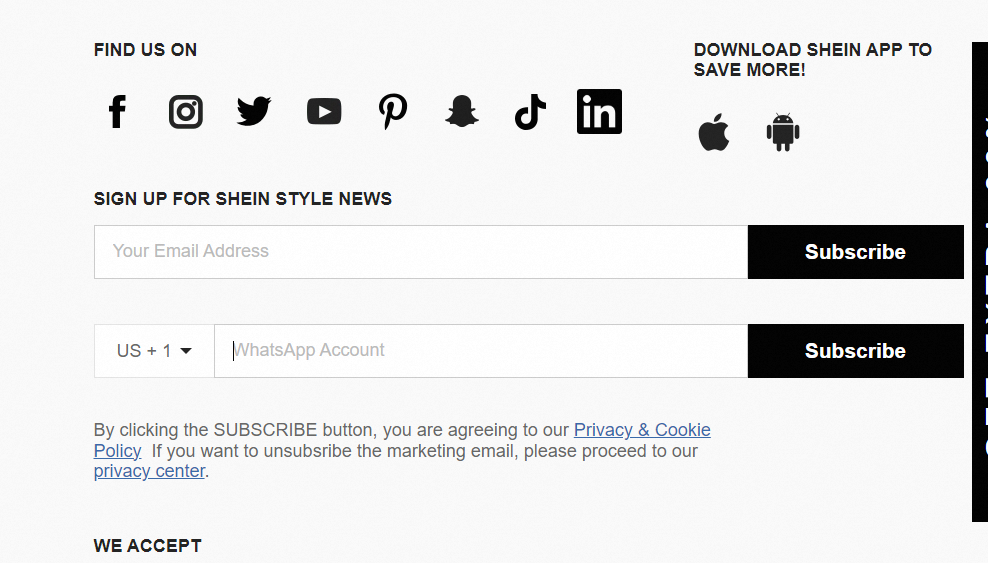 | SHEIN 首页 PC 底部订阅框——竞品确实全站铺设，但国际站实测首页转化仅 0.2–0.4%，Visable 一期不做首页入口，优先高意图点位 |
```
用户在一级触点主动授权（勾选/弹窗确认）
↓ 记录 consent（留证：谁/何时/入口/文案原文/版本）
状态：pending（待确认）
↓ 24h 内发送二级确认（WhatsApp 模板消息：确认链接 / 回复 YES / 绑定码）
┌────┴────┐
↓ 用户确认 ↓ 24h 超时
状态：subscribed 状态：unknown（不进入发送池，可后续重新引导）
↓
T+0 触发订阅 onboarding（欢迎消息 1 条）
↓
7 天冷却后进入圈人池（偏好「仅重要消息」自动降频）
```
| 项 | 设计 | 国际站对标 |
|---|---|---|
| 通道 | WhatsApp 模板消息（优先）／短信验证码（WhatsApp 不可达时兜底） | 绑定码流程（wa.me 唤醒 + BIND-xxx 绑定码）为实操范本：站内点击 → 带入绑定码 → 发送 → 回欢迎话术 → 订阅成功 |
| 确认方式 | 点击确认链接 或 回复关键词（"YES"/"JA"/"订阅"）或 发送绑定码 | 同上 |
| 超时 | 24h 未完成 → 状态置「未知」，从 pending 表清理 | 无明确流失数据，从严假设 60–70% 完成率 |
| 文案要点 | ① 说明订阅内容与频次 ② 明确的确认动作 ③ 退订说明 ④ 模板争取 Utility 类别（含订阅确认措辞） | 站外话术 "I would like to subscribe alibaba.com channel."；利益点文案 "Subscribe to WhatsApp to be notified first on limited deals" |
二级确认/订阅成功形态实拍（国际站绑定码流程 + 竞品确认页）：
| 演示图 | 说明 |
|---|---|
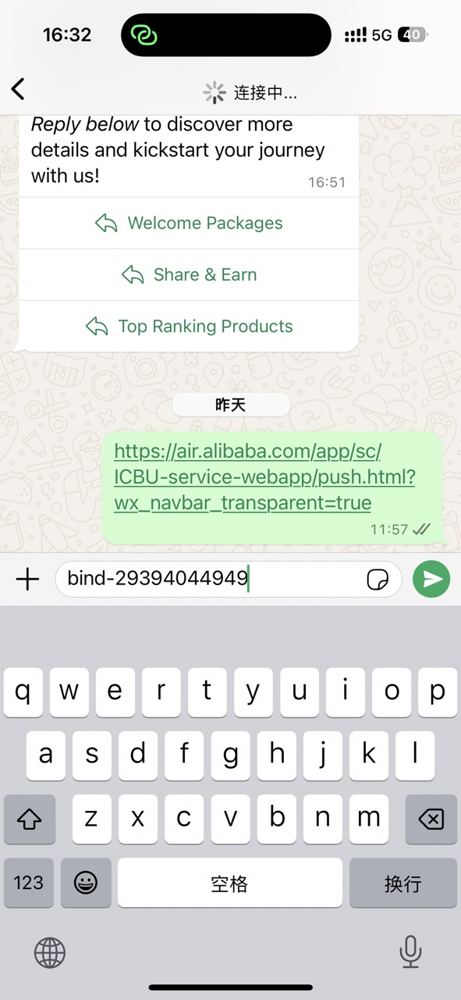 | 国际站绑定码流程：wa.me 唤醒带入 BIND-xxx 绑定码（用户发送即确认） |
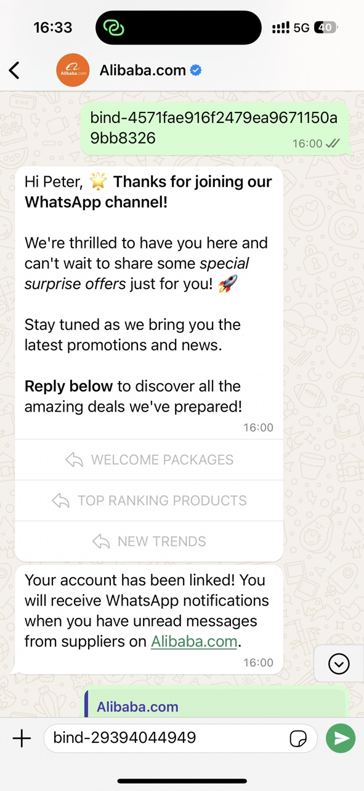 | 发送绑定码后自动回欢迎话术——绑定码方式的二级确认完成态 |
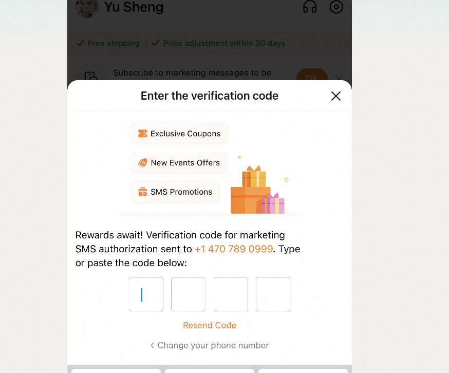 | TEMU 订阅成功确认页（竞品确认流程终点形态） |
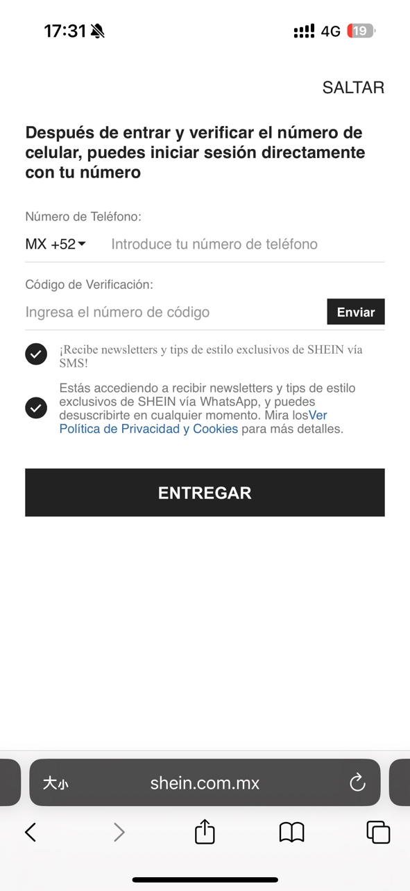 | SHEIN 短信渠道的订阅补充页——对应本方案 WhatsApp 不可达时的短信兜底通道 |
| 状态 | 定义 | 可否收营销 | 可否收系统 |
|---|---|---|---|
| subscribed（已订阅） | double opt-in 完成（营销）；一级同意完成（系统） | ✓ | ✓ |
| unknown（未知） | 一级同意但未完成二级确认（24h 超时）；或换号未重验证；或状态不明 | ✗ | ✗（系统消息需一级同意，未完成则不发） |
| unsubscribed（已退订） | 用户退订（Subscription Center / STOP / 关键词） | ✗ | ✗（按 PRD_Reminder 口径执行） |
GET /subscription-status?user_id={id}&scope=marketing → 返回三态 + 偏好（品类/频次）+ 最近同意时间。| 项 | 设计 |
|---|---|
| 触发时机 | 二级确认完成（置 subscribed）后 T+0 立即发送，仅 1 条、一次性 |
| 消息内容 | ① 确认订阅成功 + 预告将收到什么（询盘回复提醒 / 产品推荐 / 重要通知）② 偏好设置入口（品类 + 频次：每周 1 次 / 仅重要消息）③ 退订方式（Subscription Center + STOP） |
| 模板类别 | 争取 Utility（含订阅确认措辞，€0.035/条）；Meta 判 Marketing 则按 €0.11 计 |
| 计费 | 不占每周 1 轮营销额度；财年累计 ≤ 35,000 条（≈ €1,200 / €3,900） |
| 冷却规则 | onboarding 后 7 天内不进入圈人池（onboarding 已覆盖首触，避免重复打扰） |
| 价值 | ① 订阅确认降号码质量分风险 ② 偏好数据支撑精准圈人（「仅重要消息」自动降频）③ 首条消息打开率高，养账号质量分（国际站订阅欢迎流：点击率预计 50%、日均 6,000 UV） |
订阅欢迎流实拍（国际站手机号订阅 AI Sourcing Agent 欢迎话术）：
| 演示图 | 说明 |
|---|---|
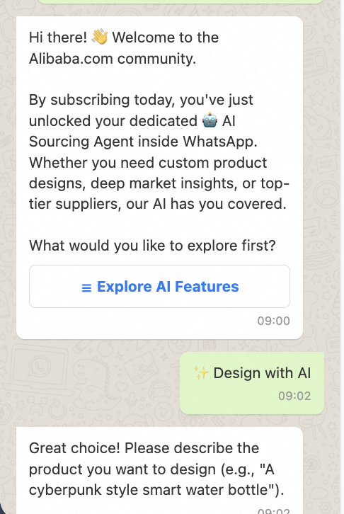 | 国际站手机号订阅后欢迎消息形态：确认订阅 + 功能引导（Explore AI Features）——本方案 onboarding 消息的参考范本 |
| 事件 | 字段 |
|---|---|
| 一级同意（触点曝光 → 点击授权） | consent_id、user_id/visitor_sk、point_id（registration / phone_verify / inquiry_popup / subscription_center）、consent_time、copy_version、device、country |
| 二级确认（发送 → 点击确认/回复） | consent_id、message_id、template_name、confirm_method（link/reply/bind_code）、confirm_time、status（confirmed/timeout） |
| 退订 | consent_id、channel（center/stop/reply）、unsub_time |
| onboarding 发送 | consent_id、message_id、delivered/read/clicked |
| 要求 | 落地 |
|---|---|
| 默认不勾选 | 注册页勾选框默认 false，不得预勾 |
| 明示同意 | 授权文案说明内容、频次、退订方式并链接隐私声明 |
| double opt-in | 营销消息必须完成二级确认（见第三章） |
| 留证 | 同意记录 append-only 存储（谁/何时/入口/文案原文） |
| 退订即时生效 | Subscription Center + STOP/UNSUBSCRIBE/ABMELDEN 即时同步三态 |
| 分类合规 | 营销消息不得夹带进 Utility 模板；Utility 保持措辞中性 |
| 欧洲号码过滤 | 国际站手机号订阅判定流程主动过滤欧洲手机号（合规从严）——Visable 主战场即欧洲，double opt-in 必须更严，点位 2（验证后询问）是核心合规触点 |
| 风险 | Abmahnung（德国竞对/消协警告函）——Legal 前置咨询结论为营销发送 Gate |
竞品授权与频次界面实拍（合规形态对照）：
| 演示图 | 说明 |
|---|---|
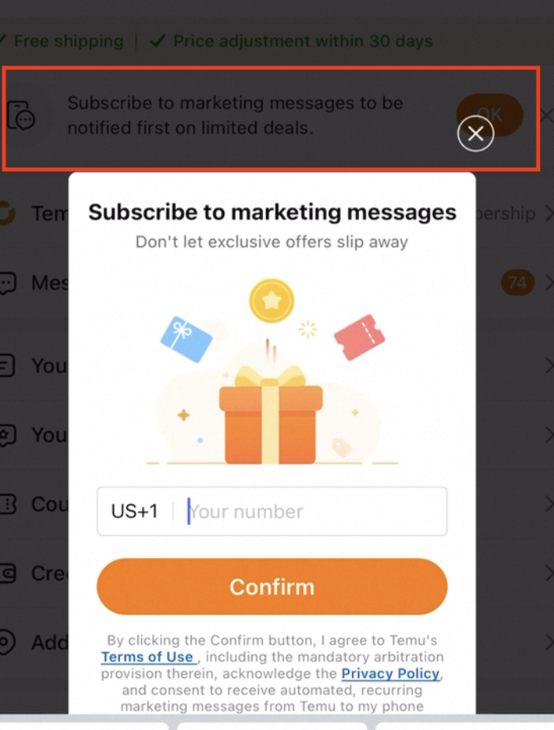 | TEMU 订阅协议与授权说明（明确告知订阅内容） |
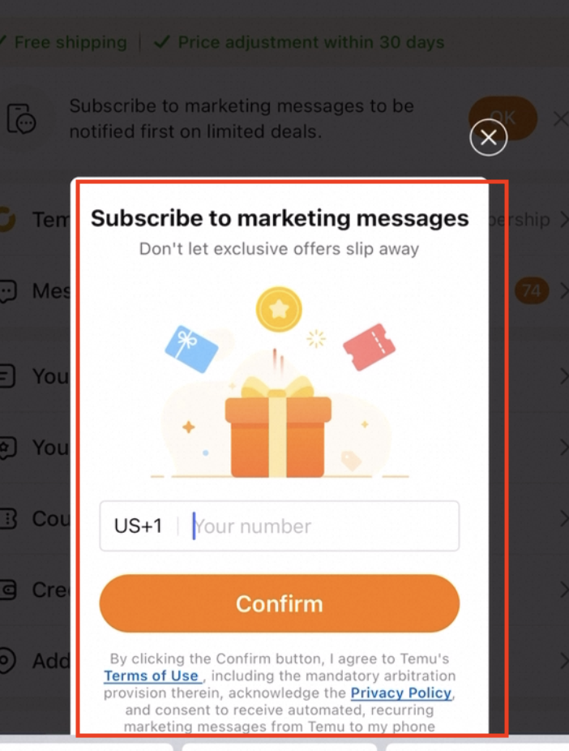 | TEMU 确认订阅（用户主动点击确认） |
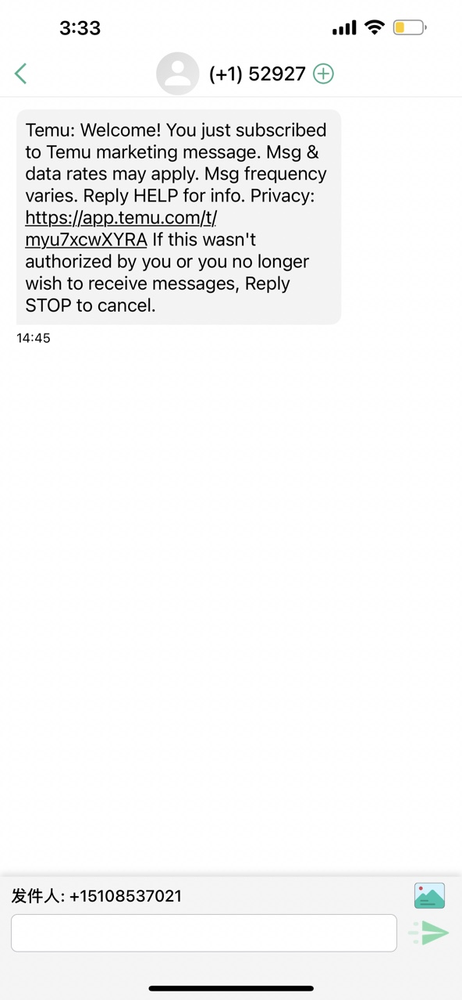 | TEMU 短信渠道协议页——多渠道授权文案范本 |
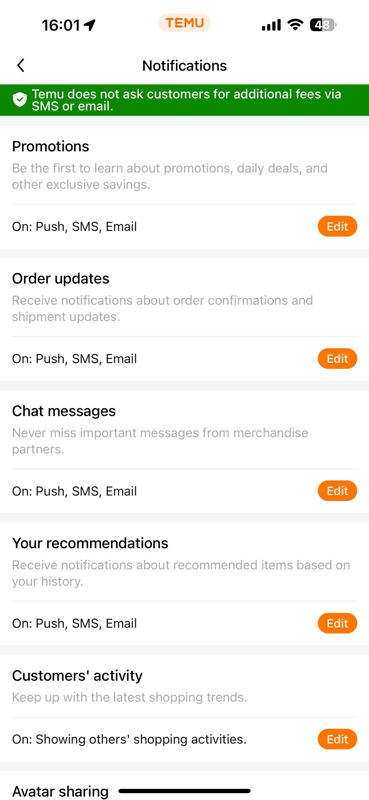 | TEMU 消息接收频次选项——频次告知与控制的界面实证（对齐 §7.2 频控） |
| 依赖 | 负责方 | 关键日期 |
|---|---|---|
| UC-180 订阅入口 Epic 联动（订阅态服务、同意记录） | 产品（牧可） | 8 月内定排期 |
| 订阅入口改造（询盘弹窗 / 验证后询问 / 注册页勾选） | 产品（牧可）+ 前端 | 8 月内定排期 |
| 同意记录存储方案 | 数据侧（TBD） | Legal 咨询启动前 |
| Legal 咨询结论（B2B 同意门槛、授权文案定稿） | Legal | 越早越好（营销发送 Gate） |
| Meta Cloud API 通道 + 模板送审（确认模板/onboarding 模板） | Harry / 述合 | 9 月（Utility 首批） |
| Subscription Center 入口复用（UPR-55） | Lifecycle / 产品 | 10 月 |
| 退订 webhook（STOP/关键词解析） | 技术（Harry） | 9 月联调 |
| 点位人群重叠率取数（询盘 ∩ 注册，Redash 无 join 键） | 数据侧 | 灰度期前（去重系数校准） |
| DE 国 UV/询盘占比（Redash country 维度超时，待其他通道） | 数据侧 | 9 月灰度排期前 |
| 指标 | 口径 | 实测/假设基线 | 目标 |
|---|---|---|---|
| 触点曝光（L1） | 询盘 1,083 req/日（含 Nexus，Visable 站内可用 ≈ 810–840 req/日）、验证 887/日、注册 946/日（Redash 实测） | 合计 2,916/日（去重前）；修正 Visable 站内 ≈ 2,640–2,670/日 | ≥ 反推所需 1,693/日 ⚠ 含 Nexus 的原数（2,916）充足，修正后（~2,650）紧平衡 |
| 一级同意转化率（L2） | 触点曝光 → 点击授权 | 点位 1：10–20%（基准 15%，对标沟通页 8.6% 最终订阅吻合）；点位 2：6–10%（基准 8%，偏高需校准）；点位 3：3–7%（基准 5%，10% 从严折半） | 灰度期（9 月）定基线：点位 1 同意 ≥15% |
| double opt-in 完成率（L3） | 一级同意 → 二级确认完成 | 60–70%（基准 65%；对标国际站可触达 40% 的质量溢价） | ≥ 60% |
| 订阅爬坡 | 财年底累计 | 基准 26–27k + 存量激活 5–10k（活跃池 13.7w × 0.5–1%/月） | ≥ 35,000（日均新增 ≈ 165） |
| 存量激活率 | SC 激活数 / 活跃池 13.7w | 0.5–1%/月 | 支撑缺口补足（≈ 5–10k/212 天） |
| 各点位订阅贡献占比 | 按 point_id 归因 | 基准：点位 1 ~58%、点位 2 ~25%、点位 3 ~17% | 灰度期（9 月）评估后调整权重 |
| 退订率 | 退订数 / 订阅数 | — | < 5% |
| 营销漏斗产出 | 圈人 → UV → AB → AB2 | AB→AB2 实测 30.6%（Redash，> 假设 25%） | 日均 UV ≥ 160 → 日均 AB2 ≥ 5（UC-419 口径） |
背景：上位 PRD v0.2 发布后，经逐指标审视，发现三项假设偏松：点位 2（验证后询问）8%×65% 对标国际站订单页 2% 偏高、点位 3（注册勾选）5%×65% 为默认勾选 10% 折半但未考虑"默认不勾选 + double opt-in"的双重衰减、二级确认率 65% 无对标实证。本次校准调整三点并做三情景模拟，结果需认真对待。
| 项目 | 保守 | 基准（校准） | 乐观 | 说明 |
|---|---|---|---|---|
| 点位 1 一级同意率 | 10% | 15% | 20% | 不变（国际站 8.6% 最终订阅率对应 15%×60%=9% 吻合） |
| 点位 2 一级同意率 | 4%（↓原 6%） | 5%（↓原 8%） | 8%（↓原 10%） | 校准：国际站订后页 2% + 验证场景溢价 2pp（灰度期实测校核） |
| 点位 3 一级同意率 | 2%（↓原 3%） | 3%（↓原 5%） | 5%（↓原 7%） | 校准：默认不勾选的实际勾选率在 B2B 场景中通常 1-3% |
| 二级确认完成率（L3） | 55%（↓原 60%） | 60%（↓原 65%） | 65%（↓原 70%） | 校准：国际站绑定码无流失数据 → 从严取 60% 为中位 |
| 去重系数 | 0.70 | 0.75 | 0.80 | 三点位人群高度重叠（询盘者几乎 100% 已验证+注册） |
稳态日均产出计算（示例基准）：
| 点位 | 曝光/日 | L2×L3 | 日均产出 | 去重后 |
|---|---|---|---|---|
| 1 询盘弹窗 | 825（↓排除 Nexus ~25%） | 15%×60%=9.0% | 74.3/日 | — |
| 2 验证后询问 | 887 | 5%×60%=3.0% | 26.6/日 | — |
| 3 注册勾选 | 946 | 3%×60%=1.8% | 17.0/日 | — |
| 合计 | 2,658 | 加权 7.39%×60%=4.44% | 117.9/日 | ×0.75=88.4/日 |
⚠ 注：点位 1 曝光从 1,083 修正至 825——排除 Nexus（request_origin='alibaba'），该部分询盘在 Alibaba.com 场域发生、Visable 无法弹窗。修正后总曝光从 2,916 降至 2,658，仍高于反推所需 1,693/日。最终达标能力变化见下。
212 天累计（三段式 + SC 存量激活）：
| 时段 | 天数 | 保守 | 基准 | 乐观 |
|---|---|---|---|---|
| 9 月灰度（DE 单点位） | 30 | 8/日 → 240 | 17/日 → 510 | 25/日 → 750 |
| 10 月全量爬坡（80%） | 31 | 42/日 → 1,302 | 70/日 → 2,170 | 118/日 → 3,658 |
| 11-3 月稳态 | 151 | 53/日 → 8,003 | 88/日 → 13,288 | 147/日 → 22,197 |
| 站内累计 | 212 | 9,545 | 15,968 | 26,605 |
| + SC 存量激活 | 10-3 月 | 0.3%/月→1,644 | 0.8%/月→6,576 | 1.2%/月→9,864 |
| 总计 | — | 11,189 | 22,544 | 36,469 |
| vs 35,000 | — | ✗ 缺口 23,811（32%） | ✗ 缺口 12,456（64%） | ✓ 1,469（104%） |
⚠ 核心结论：排除 Nexus 后，基准情景仅贡献 ~22,500（64%），距 35,000 缺口 ~12,500。乐观勉强超标（104%）但条件苛刻：点位 1 ≥20%、点位 2+3 均值 ≥5%、L3 ≥60%、SC ≥1.2%/月、10/1 前全量。任一未达则落入基准轨道。B 计划（· 9.1.2）从 gap 12,500 必须启动。
要达到 35,000 必须同时满足：
| 条件 | 要求 | 当前假设 | 差距 |
|---|---|---|---|
| 点位 1 一级同意率 | ≥20-21%（基准 15% 不够；修正曝光后产出降 23%） | 基准 15% | 需灰度实测证实 ≥20% 方可确认 10 月全量轨道；若 15%，缺口扩大 ~3,500 |
| 点位 2+3 一级同意率均值 | ≥5% | 校准后 4% | 灰度期后若实测偏低，缺口扩大 |
| 二级确认完成率 | ≥60% | 60% | 需实测，若 <55% 则损失 ~15/日（212 天 ≈ 3,000） |
| SC 存量激活率 | ≥1.2%/月（活跃池 13.7w） | 0.8%/月 | 若仅 0.5%→缺口扩大 ~3,200；1.2%→增 ~2,744 |
| 全量上线时间 | 10 月 1 日前 | 10 月爬坡 | 每延迟 1 周损失 ~500（稳态日均 88×7×80%） |
B 计划（若 9 月灰度不达标）：
| 触发条件 | 措施 | 预期增量 |
|---|---|---|
| 点位 1 一级同意 <15% | 优惠券/首单激励绑定弹窗（弹窗内加"首次询盘回复提醒即享 €X 优惠"） | +3-5pp → 可达 18-20% |
| 二级确认 <60% | 短信兜底 + 24h 内二次模板消息提醒 | +5-10pp → 60-65% |
| SC 激活 <1%/月 | 站内 PUSH 引导 + 注册成功页/设置页强引导 SC 入口（非仅设置菜单深层） | +0.3-0.5pp/月 |
| 站内三触点缺口 >5k | 原 P2（登录页入口 / 站外 IG/FB 落地页）提前到 P1，11 月上线 | +3-5k/212 天 |
| 上述措施仍不够 | 调整 35,000 目标（与 UC-419 对齐降 AB2 预期）或追加预算做站外广告引流订阅 | — |
灰度期（9 月 DE）的决策节点：
| 节点 | 动作 |
|---|---|
| 9 月中（第 2 周） | 初步评估点位 1 一级同意率 → 若显著 <15%，提前启动 B 计划措施 1（激励弹窗） |
| 9 月底 | 全月数据分析：① 点位 1 一级同意率 ② double opt-in 完成率 ③ DE 转化率 vs 假设（10-20%）→ 判定 10 月全量基于哪一情景 |
| 10 月初 | 若基准达标（同意 ≥15%、二级 ≥60%），全量放量；若低于，同步启动 B 计划措施 1+2+3；若严重低于（同意 <10%），启动措施 4（提前 P2） |
| 验收项 | 通过条件 | 通过后动作 |
|---|---|---|
| 点位 1 一级同意率 | ≥ 15%（实测 8.6%+ 即可确认全量基准成立） | 10 月全量放量 |
| double opt-in 完成率 | ≥ 60% | 同上 |
| 合规链路 | 模板过审（Utility 首批）+ 零投诉 | 营销试点启动 Gate |
| 若显著低于 | 同意 < 15% 或二级 < 60% | 提前加码 Subscription Center 存量激活或登录页入口（原 P2 提前） |
| 时间 | 里程碑 | 交付 |
|---|---|---|
| 8 月 | PRD 定稿 → 订阅入口改造排期 → Legal 咨询启动 → UC-180 对齐 → 点位人群重叠率/DE 占比取数 | PRD 发布、排期确认 |
| 9 月 | 订阅收集灰度（DE 1 国 1 场景：询盘弹窗） + 订阅后 onboarding + 确认/onboarding 模板送审 + 三态服务与退订 webhook 联调 | 订阅链路跑通、模板过审、转化率基线验证（同意 ≥15%、二级 ≥60%） |
| 10 月 | 全点位放量（注册页勾选 + 验证后询问 + Subscription Center 上线） + 营销试点启动（Legal Gate） | 订阅爬坡进入正轨；存量激活启动 |
| 11–12 月 | 点位权重调优（按转化率实测）+ 频次 A/B（每周 1 次 vs 2 次） | 订阅爬坡增速验证（基准 26–27k 轨道） |
| 2027 Q1 | 订阅冲刺 35,000（含存量激活补足）+ 日均 UV ≥ 160 / AB2 ≥ 5 达成验证 | 财年底（2027-03-31）目标达成 |
| 术语 | 定义 |
|---|---|
| 一级同意 | 用户在站内触点主动授权（勾选/弹窗），含内容/频次/退订说明与留证 |
| 二级确认（double opt-in） | 通过 WhatsApp 模板消息（确认链接/回复关键词/绑定码）或短信/邮件确认码完成二次确认，完成后才可发营销 |
| 绑定码流程 | 国际站 double opt-in 实操范式：站内点击 → wa.me 唤醒带入 BIND-xxx 绑定码 → 发送 → 欢迎话术 → 订阅成功 |
| 订阅态三态 | subscribed / unknown / unsubscribed |
| point_id | 订阅点位标识（registration / phone_verify / inquiry_popup / subscription_center / offsite） |
| 活跃池 | 存量已验证用户中有登录记录的 13.7w（3.8%）——Subscription Center 激活的现实基数（非 360w 全量） |
| 圈人池 | 已订阅且过 onboarding 7 天冷却的用户集合，按轮次滚动圈人 |
本文档演示图共 33 张，存放于 assets/prd/，按使用章节索引如下：
| 演示图 | 所在章节 | 内容 |
|---|---|---|
| str_01_messaging_map.png | §1.1 | 全球消息应用分布地图 |
| int_01_chat_connect_popup.png | §2.1 / §2.2 | 国际站沟通页弹窗 |
| int_07_chat_connect_popup_v2.png | §2.1 / §2.2 | 沟通弹窗变体 A |
| str_04_chat_allow_popup.png | §2.2 | 沟通弹窗变体 B（会话上叠弹窗） |
| int_02_messenger_list_banner.png | §2.1 | 沟通列表页订阅横幅 |
| int_03_myalibaba_banner.png | §2.1 | 个人中心 MA 横幅 |
| int_04_order_detail_banner.png | §2.1 | 订单详情页横幅 |
| int_05_pay_success_banner.png | §2.1 | 支付成功页横幅 |
| ord_01_order_closed_subscribe.png | §2.1 | 订单关闭页订阅 |
| str_02_wap_subscribe_bar.png | §2.1 | WAP 订阅条 |
| int_08_home_pc_banner.png | §2.1 | 首页 PC 横幅（0.2% 不做） |
| int_09_home_pc_footer.png | §2.1 | PC 页脚链接 |
| int_10_search_subscribe_flow.png | §2.1 | 搜索订阅三步流 |
| temu_03_phone_verify.png | §2.3 | TEMU 电话验证订阅 |
| shein_05_phone_optin_us.png | §2.3 | SHEIN 手机注册 SMS 授权 |
| shein_02_register_mx.png | §2.4 | SHEIN 注册短信补充页 |
| ae_register_consent.png | §2.4 | AE 注册营销勾选 |
| ae_register_page.png | §2.4 | AE 注册页 |
| shein_04_register_sg.png | §2.4 | SHEIN WhatsApp 注册入口 |
| shein_06_notification_settings.png | §2.5 | SHEIN 通知设置 |
| temu_07_web_notifications.png | §2.5 | TEMU Web 通知设置 |
| ae_notification_settings.png | §2.5 | AE 通知设置（PC） |
| ae_notification_settings_app.png | §2.5 | AE 通知设置（App） |
| ord_02_bind_code_input.png | §3.2 | 绑定码输入 |
| ord_03_bind_code_success.png | §3.2 | 绑定码订阅成功 |
| temu_04_success.png | §3.2 | TEMU 订阅成功 |
| shein_03_sms_complement.png | §3.2 | SHEIN 短信补充订阅 |
| phone_01_ai_welcome.png | §5 | 订阅欢迎话术 |
| temu_01_agree.png | §7.1 | TEMU 订阅协议 |
| temu_02_confirm.png | §7.1 | TEMU 订阅确认 |
| temu_05_sms_agree.png | §7.1 | TEMU 短信协议 |
| temu_06_frequency.png | §7.1 | TEMU 接收频次 |
| shein_01_home_pc.png | §2.7 | SHEIN 首页订阅框 |
| 资料 | 位置 |
|---|---|
| BRD_WhatsApp买家发送策略一期 v1.2 | 本地 / jolyne2025.github.io/whatsapp-brd |
| 订阅漏斗取数测算报告 v3（含 5.3b 假设验证） | 本地 WhatsApp_订阅漏斗取数测算报告.md |
| Alibaba 国际站 WhatsApp 数据与策略支撑汇总（第九章：订阅方案） | 本地 Alibaba_WhatsApp_数据与策略支撑汇总.md |
| 语雀订阅方案 6 篇（入口整理/手机号订阅 PRD/竞品调研/WhatsApp 手册/订单页 BRD/订阅增长策略 BRD） | yuque.alibaba-inc.com amb5ap/sigcbq（2026-08-19 实读） |
| UC-419 WhatsApp: Marketing Messages | Jira（Epic：UC-180） |
| Nexus WhatsApp Integration PRD（格式参考） | Confluence Nexus/470123962 |
| 04 whatsapp 业务策略表（目标基线） | 钉钉 XPwkYGxZV347LdvpH3O5D5ozJAgozOKL |
| WhatsApp 官方号申请 SOP（合规与模板口径） | Confluence ARISE/449445930 |
| PRD_Reminder Notification to improve AB2（系统消息口径） | Confluence PRODTECH/63340593 |